Fixtures: tests/fixtures/v5/shop, tests/fixtures/v5/shop-bare, the v5/repo-set built by `npm run qa:v5` (synthetic only, no client data)
Generated from
docs/tutorials/V5.md; screenshots are the files under qa/v5/shots/ (relative links: keep this page in the repository tree).DataPass V5, a guided tour
This page walks through everything new in V5, in the order you would try it, and lists every keyboard shortcut. Each part says where to click, what you should see, and what DataPass will never do on your behalf.
Everything below is on main (V5 final).
DataPass never runs your client's code, never deploys, and never calls an AI behind your back. AI help always goes through a request file you hand to your own AI, and whatever comes back is marked AI-proposed.
Contents
- Where things are
- Every shortcut
- Detach a dbt model
- The Authority section
- Multi-repo view
- Power Query data sample
- DAG options
- Guided tours: Learning and Interview
- Concept, decision and query cards
- A tour prepared by your AI
- Explainer export
- Architect review
- Studio demo
- Turning V5 features off
Before you start
- Build and install the extension (
npm run build, then install the VSIX), reload VS Code. - Open the folder
tests/fixtures/v5/shop: a made-up lakehouse with a PySpark ingestion notebook, bronze/silver/gold layers, dbt modelsstg_ordersandfct_orders, a semantic model and a.datapass/manifest. - To see how DataPass behaves when facts are missing, open
tests/fixtures/v5/shop-bare(same code, no manifest, decisions, volumetry or samples). Wherever a fact is missing, you should see a hole (what is missing, why, how to fill it), never a made-up value.
1. Where things are
| Place | What lives there |
|---|---|
| Activity bar, DataPass icon | the Project, Git, Work and Galaxy views |
| Activity bar, DataPass Navigator icon | the Navigator (the location you are at, its views, the Tours section) |
| Bottom panel, DataPass Context | the Context view: facts about the current location, the Authority section, tour explanations |
| Bottom panel, DataPass Architecture | the Architecture view |
| Secondary side bar, DataPass | Navigator, Rail, AI (the AI exchange), Claude & Codex, Details, Airflow DAG |
Command Palette (Ctrl+Shift+P), type DataPass: |
every command named in this page |
Which commands show in the palette depends on your DataPass mode: DataPass: Switch Mode… changes it, DataPass: Customize DataPass Mode… shows or hides single commands.
2. Every shortcut
These are all the keyboard shortcuts DataPass declares (package.json, main). Nothing else is bound.
| Keys | Command | When it works |
|---|---|---|
Alt+= |
DataPass: Larger Code Text (A+) | everywhere |
Alt+- |
DataPass: Smaller Code Text (A−) | everywhere |
Shift+Alt+P, then Up |
DataPass: Navigate Up (coarser level) | a DataPass navigation view is open (see below) |
Shift+Alt+P, then Down |
DataPass: Navigate Down (finer level) | same |
Shift+Alt+P, then Left |
DataPass: Previous View Here | same |
Shift+Alt+P, then Right |
DataPass: Next View Here | same |
Shift+Alt+P, then Home |
DataPass: Navigate to Project Root | same |
Shift+Alt+P, then Backspace |
DataPass: Navigate Back | same |
Shift+Alt+P, then Shift+Backspace |
DataPass: Navigate Forward | same |
Shift+Alt+P, then V |
DataPass: Pick a View Here… | same |
- The
Shift+Alt+Pchords work only while a DataPass navigation view is open, and never while you type in the editor, the terminal, a list or an input box. The settingdatapass.nav.globalKeys(on by default) turns them all off. - DataPass: Reset the Code Text Size has no key: run it from the palette.
- Inside the DataPass navigation view itself (not VS Code shortcuts, they only work while that view has focus): plain
Up/Downgo to a coarser / finer level,Left/Rightto the previous / next view,Hometo the project root,Backspaceback. They are ignored while you type in a field or holdCtrlorShift.Alt+Left/Alt+Rightare left to VS Code (back / forward). - Inside the Navigator, when a guided tour is running, the number keys jump to a step and the mouse wheel moves through steps (see part 8).
3. Detach a dbt model
A dbt model can be materialized as a Fabric notebook (DataPass proposes the notebook; you review it). Later you may want the notebook, not dbt, to be the authority: that is detaching. DataPass records the decision, then tells you when the two drift apart. It never re-syncs on its own.
-
Materialize first, if the model is not yet: DataPass: Materialize dbt Models as Fabric Notebooks (preview, then write). You see a preview; nothing is written before you confirm.
-
In the Project view, right-click the dbt model
fct_ordersand choose DataPass: Detach dbt Model (the notebook becomes the authority). (From the palette, the same command asks you to pick the model.) -
Read the confirmation and confirm. DataPass writes one file: the detach record under
.datapass/materialization/, with the hashes of both sides.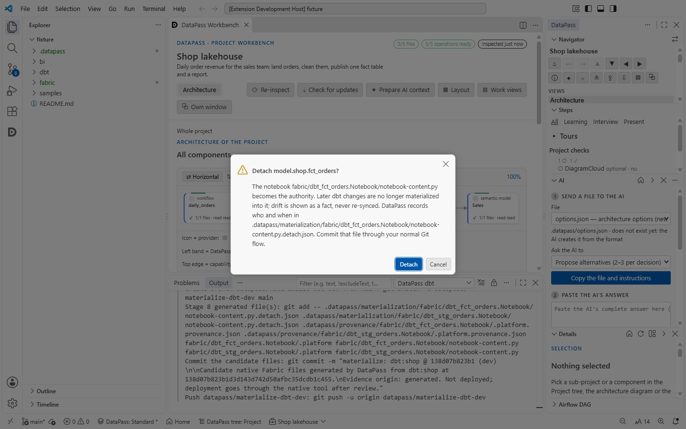
Detach confirmation -
The model now carries a detached badge in the Project view, and the Context view shows the authority line.
Detached badge -
Edit the notebook: the drift says notebook edited. Edit the dbt model too and commit: it says both changed. Other states are in sync since detach, dbt changed and unknown (DataPass could not read the dbt revision: a hole, never a guess). You can rename these words with
datapass.dbt.driftLabels.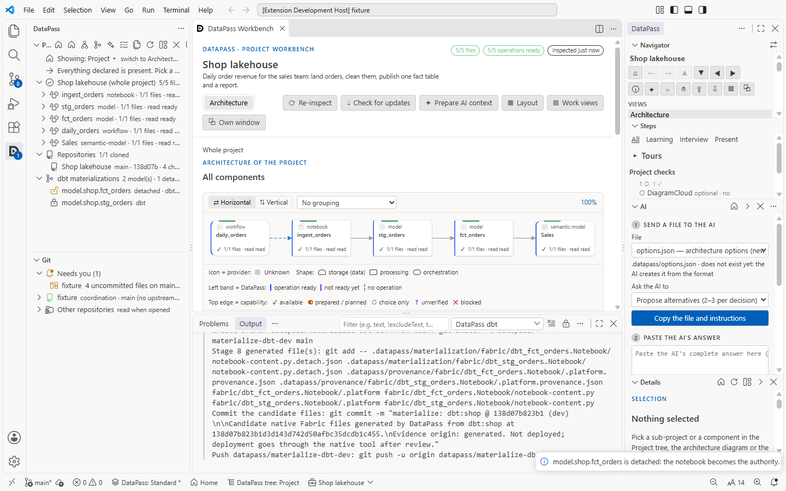
Drift: both changed -
To re-attach, materialize the model again: you get a new proposal to review, never an automatic change.
Spark job definition target. The materialize command also offers a spark-job-definition target: a wheel skeleton and an entry script, proposed only, with a Git plan you run yourself. The wheel is not built and nothing is deployed. The default target stays the Fabric notebook.
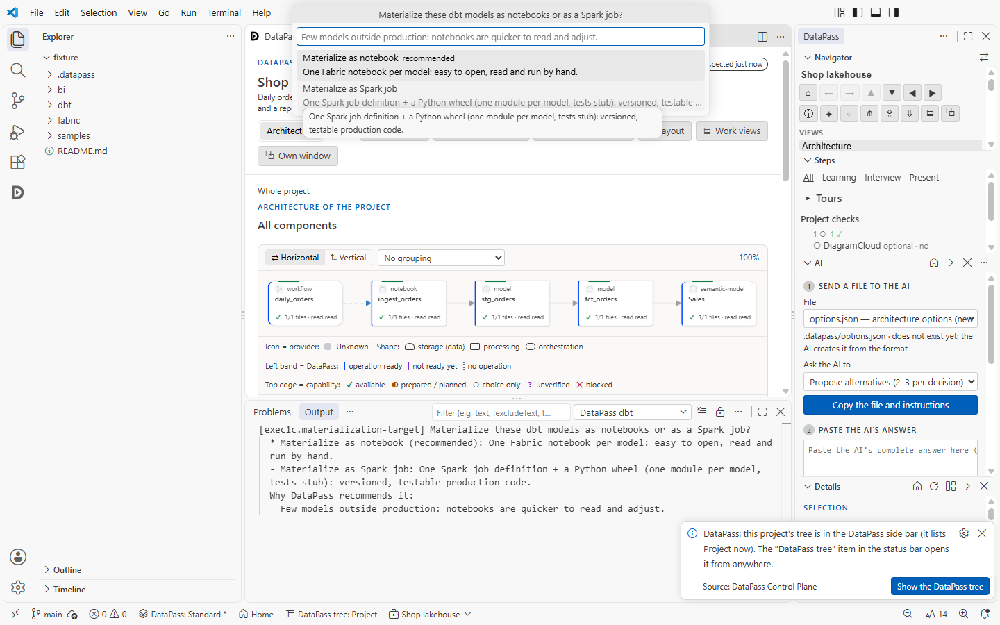 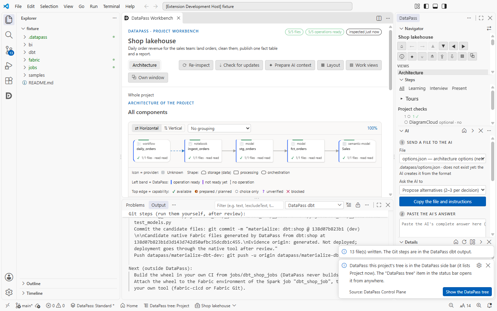
What DataPass never does here: run dbt, run the notebook, deploy, or write to Git.
4. The Authority section
Open the Context view (bottom panel) and its Authority section. For the current location it lists who may do what:
- granted: a local approval made by a DataPass action, for an exact file state, audience and scope;
- claimed: a label that only says "approved" or "reviewed" (from a file or an AI answer). A claim never counts as an approval, even when it names a reviewer.
The detached fct_orders shows its stamp, actor and date. When nothing was approved you read "no approval recorded", never "approved". The section is read-only: there is no approval button.
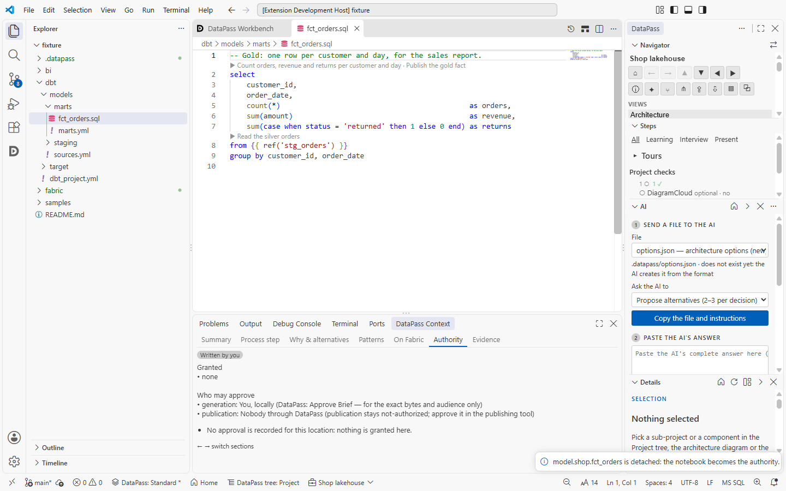
5. Multi-repo view
For a project spread over several repositories (the acceptance run builds ingest, transform and bi), DataPass reads the repository set once and adds two views to the Navigator. Go to a location in the Navigator and move between its views with Shift+Alt+P then Left / Right, or Shift+Alt+P then V:
-
Repo lanes: one lane of commits per repository (the last 100). A repository that is listed but not cloned shows as a hole, not as an empty lane.
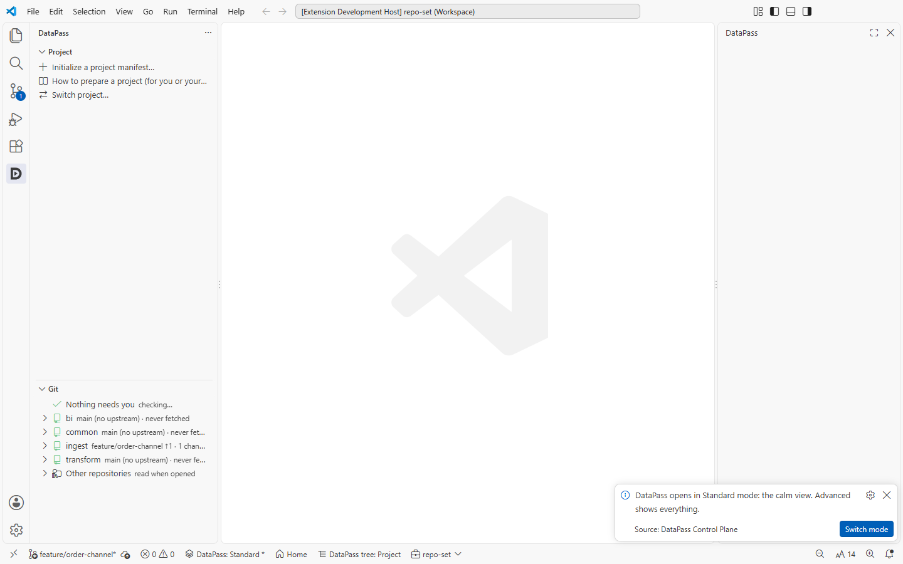
Repository lanes -
Repo components: a flow from each repository to the components its commits touched; the wider the link, the more commits. Titles and words are a setting (
datapass.repoHistory.labels).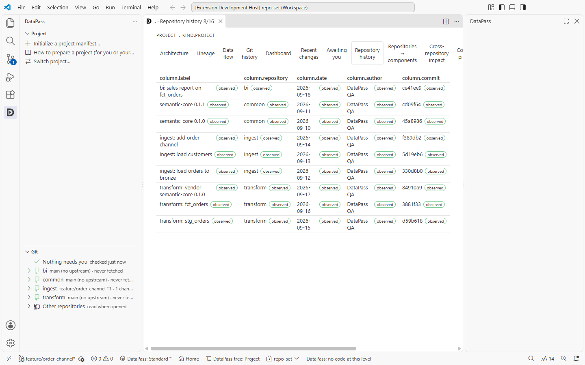
History across repositories -
Pin drift (is the vendored Common copy behind the Common repository?) is checked by a non-blocking job in the merge-request pipeline, not in the editor. Without a Common clone it says "unknown", never "up to date".
DataPass only runs read-only Git commands here: no fetch, pull, checkout or push.
6. Power Query data sample
In the code-steps view of a Power Query or notebook file, each step has a slot for a small data sample:
- Select a step, then run DataPass: Data Sample for a Code Step.
- Choose where the sample comes from:
- a local data file you pick, read by the Data X-Ray extension (only if it is installed), or
- a sample request you copy for your own AI; paste its answer back and the rows are marked AI-proposed.
- The rows appear under the step. Select another step: its own sample shows.
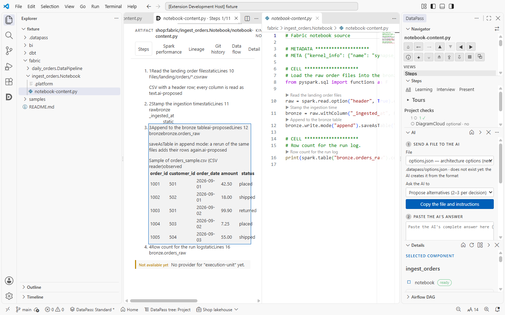
On shop-bare the slot shows a "no sample" hole, never generated rows. DataPass does not run the step's query.
7. DAG options
The Airflow DAG view (secondary side bar) has two buttons in its title bar:
- DataPass: Switch the Airflow DAG Layout (Top-Down / Left-Right) (setting
datapass.airflow.dagLayout, default top-down); - DataPass: Choose Where the Airflow DAG View Opens: the side bar, the bottom panel or an editor tab (setting
datapass.airflow.dagPlacement, default side bar).
Shapes follow the operator family (sensor, transfer, SQL, Python…); you can change them with datapass.airflow.dagFamilies. An operator DataPass cannot classify gets a plain shape labelled "unclassified". Your choices are kept after a reload.
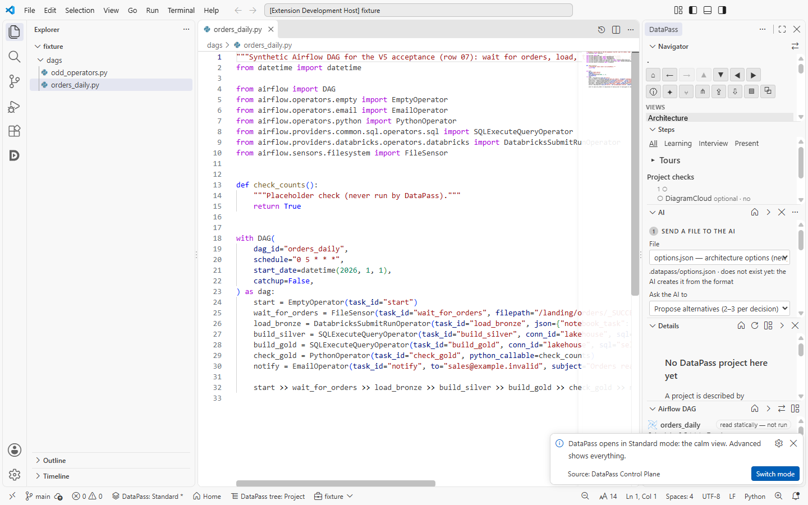 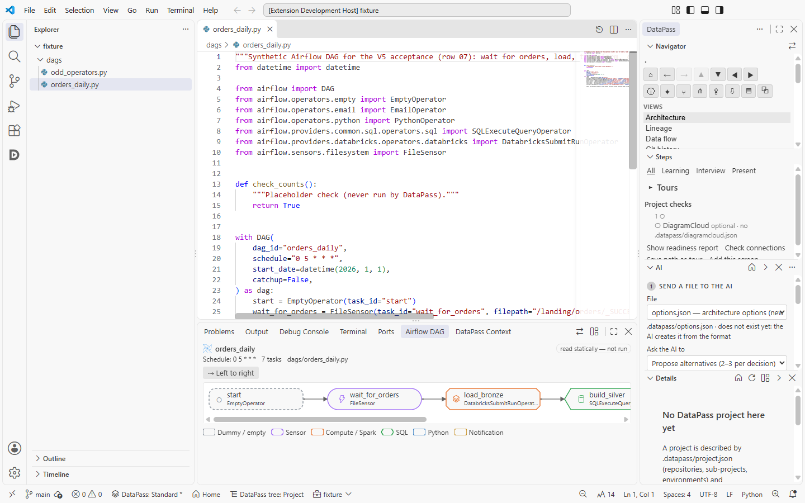
8. Guided tours: Learning and Interview
On main today: the Navigator's Tours section lists tours generated from the project (lineage and execution journeys) and your own tours from .datapass/tours.json. Use DataPass: Pick a Tour…, then DataPass: Next Tour Step and DataPass: Previous Tour Step.
Guided mode:
-
Run DataPass: Guided Mode (Learning / Interview)… (or use the mode switch in the Navigator).
-
Learning → the built-in tour The whole picture has five steps: arrive, live, change, run, trust. Move with the Next / Previous buttons, the number keys or the mouse wheel. The current step is highlighted on the mini-map and its explanation shows in a box (Navigator and Context view).
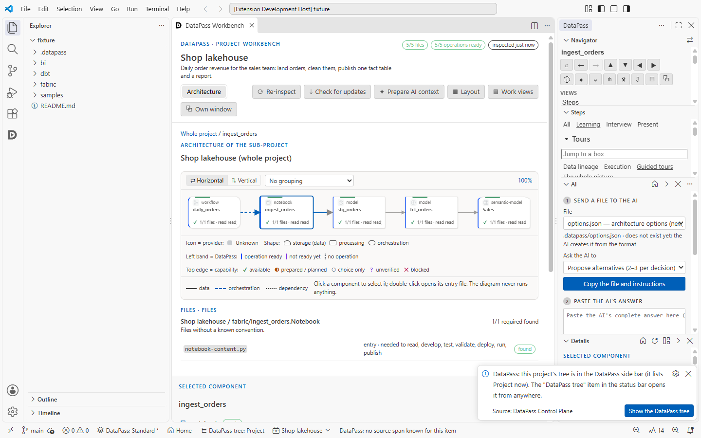
Learning tour 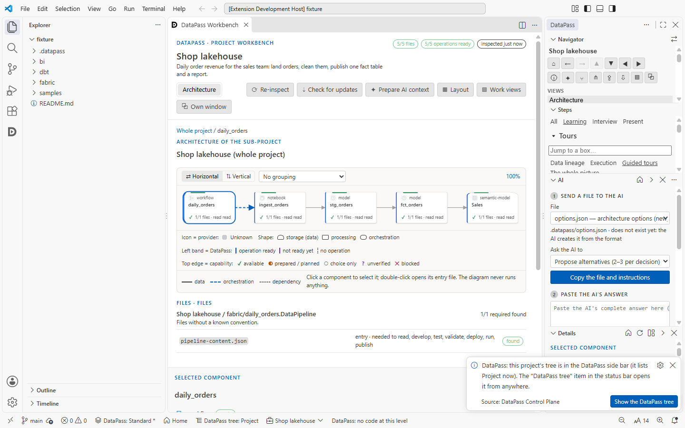
Step explanation box -
Interview → step 0 "Explain the project" (objectives, volumetry, platforms), then the whole picture, then the queries worth showing; each step has two or three questions to ask yourself. DataPass: Interview Prep for This Project will rank the notions the project really uses.
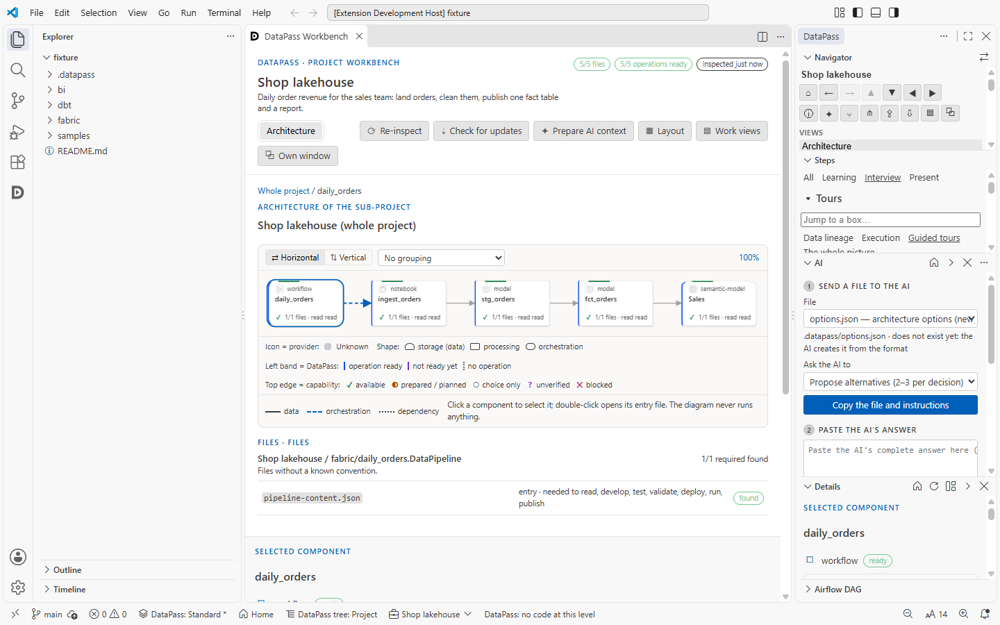
Interview step 0 -
Walk through some views, then DataPass: Save Current Path as Tour…: the path is saved in
.datapass/tours.json. DataPass: Add This Screen to a Tour… adds the current screen to a tour. DataPass: Present Tour (Read-Only) plays it with no edit controls.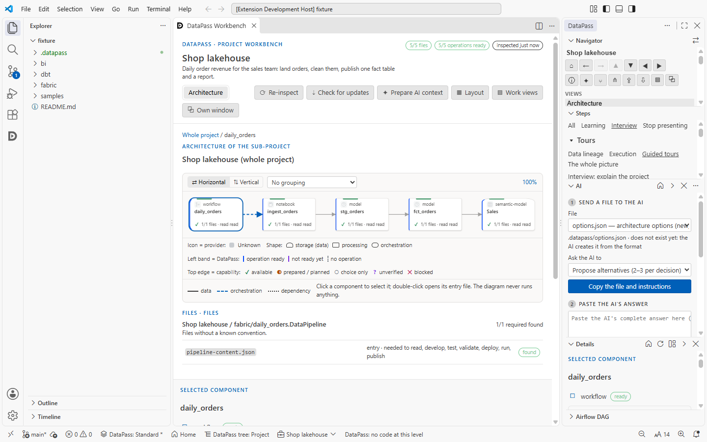
Save current path
The built-in tours are built by DataPass: Interview Prep for This Project (its last entry shows them as datapass.tour/1). In Guided mode, picking Learning starts its built-in tour directly in the Navigator; picking Interview always starts the built-in tour at step 0 "Explain the project", even on a project with no .datapass folder (objectives and volumetry then show as holes). If you also saved your own tours for that mode, you pick which one to play. On shop-bare, objectives and volumetry are holes, and a step with nowhere to go (no orchestration) is shown as a hole step, not skipped.
9. Concept, decision and query cards
-
DataPass: Queries Worth Showing (on
main): the project's notable queries as cards, ranked by how well they show your skills in an interview (datapass.pedagogy.queryShowcase.topN, default 10).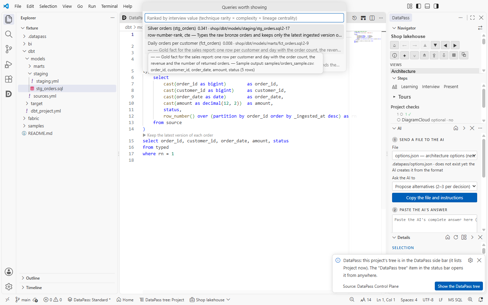
Queries worth showing -
DataPass: Pattern Cards for This File:
- a concept card explains a pattern with an excerpt of your own code; click the excerpt to jump to it;
- a decision card shows which option the project took and where. When no fact says it, the card asks the owner a question instead of guessing.
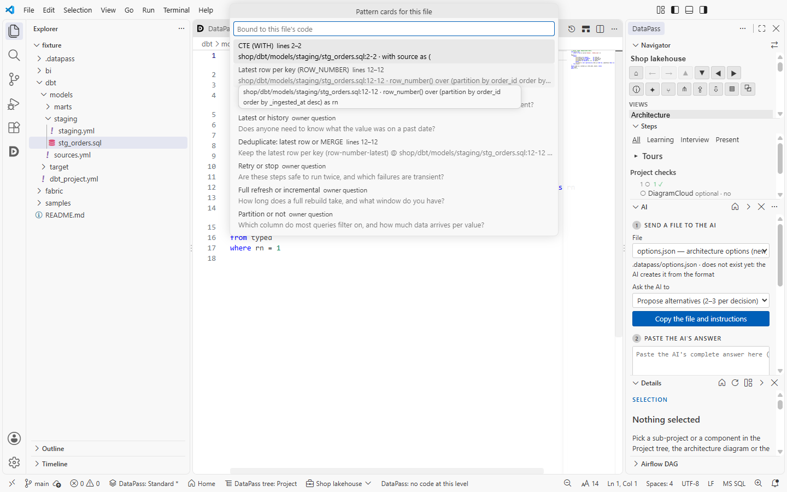
Concept card 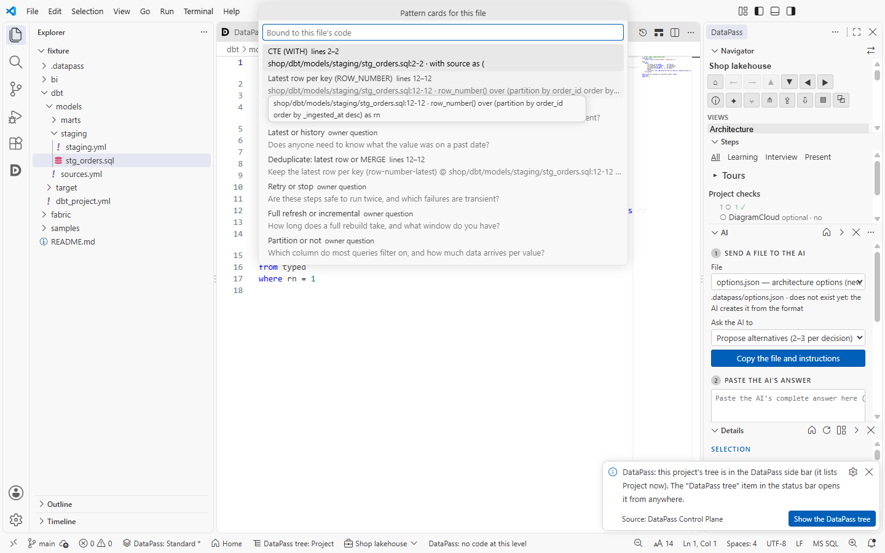
Decision card -
DataPass: Ask Your AI for Model Interview Answers prepares a request for your own AI; the answers come back marked AI-proposed.
10. A tour prepared by your AI
-
Run DataPass: Ask the AI for a Guided Tour… and pick a topic (for example "BI and reporting"; topics are in
datapass.guided.ai.topics). -
DataPass writes a request with the project's real locations and views. Give it to your AI; there is no network call.
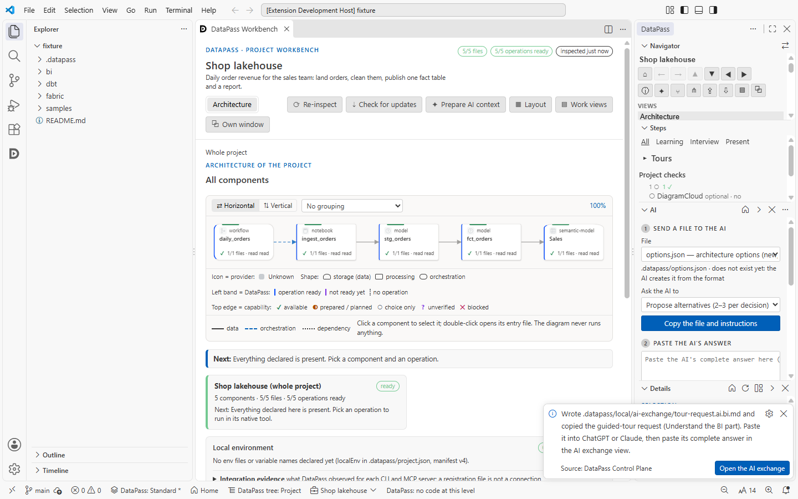
Tour request -
Import the answer through the AI exchange. The tour appears marked AI-proposed. A step that points to a place that does not exist becomes a hole step, never an invented screen.
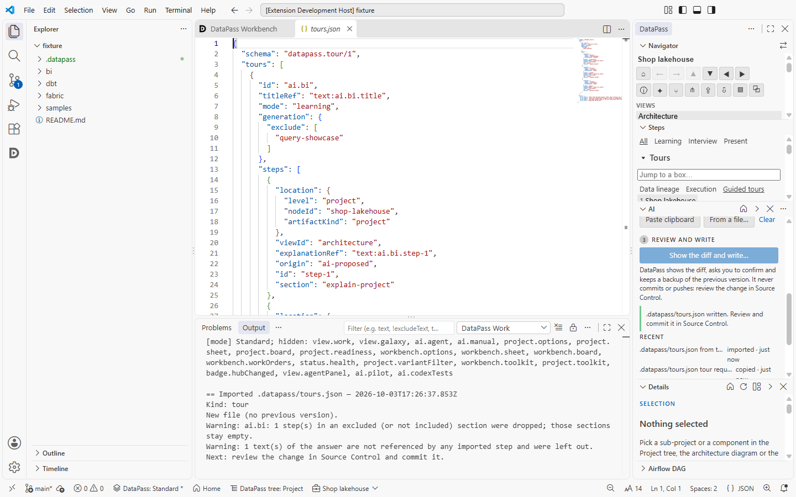
Imported AI tour
11. Explainer export
A single HTML page you can send to a client: architecture map, flows, lineage, readiness, next steps and recorded decisions.
- Run DataPass: Export Explainer Page (HTML)….
- Choose the audience: internal (confidential items left out) or public (only items marked public).
- The page is saved as
.datapass/explain/export-<date>.html. Click Open in Browser or Reveal File. DataPass uploads nothing: you share the file yourself.
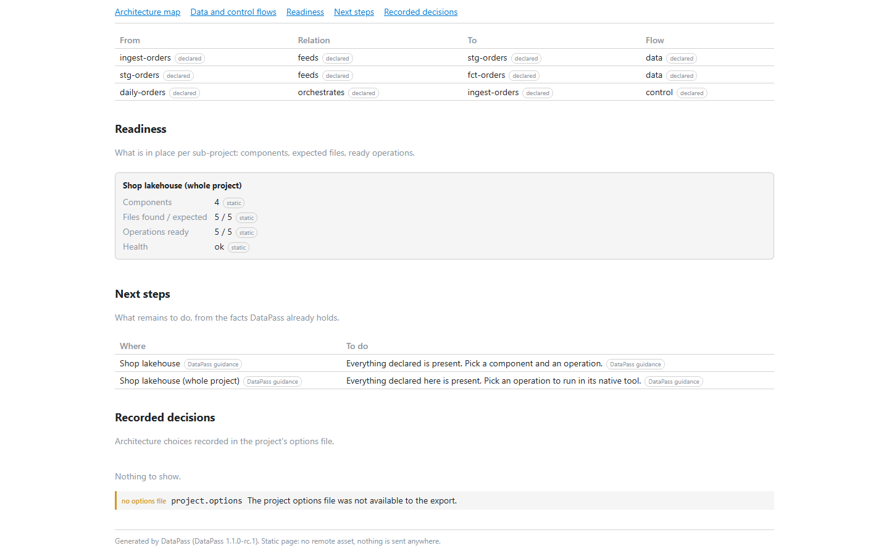
The page works offline (no web link inside). Its header shows the project, the Git commit, the date and the legend of where each fact comes from. Sections and their order are a setting (datapass.explain.sections), words too (datapass.explain.labels). On shop-bare, readiness and decisions show holes, never an empty chart dressed up as data.
DataPass: Export Explainer Page with a Tour (HTML)… adds a tour player to the page, so the reader can step through a tour without VS Code. The plain export asks too, with No tour as the default.
12. Architect review
DataPass offers an architect review (never runs one by itself) when:
- a change touches many components (more than
datapass.architectReview.largeChangeComponents, default 5); - the same check fails twice in a row (
datapass.architectReview.repeatedFailures); - you mark a readiness milestone done.
- Accept the offer, or run DataPass: Ask an Architect Review (AI exchange)…: a request is prepared for your AI.
- Run DataPass: Import the Architect Review Answer…: the answer shows in the Context view, marked AI-proposed. A citation of a file that is not in the project is flagged "unverified". The milestone stays reversible.
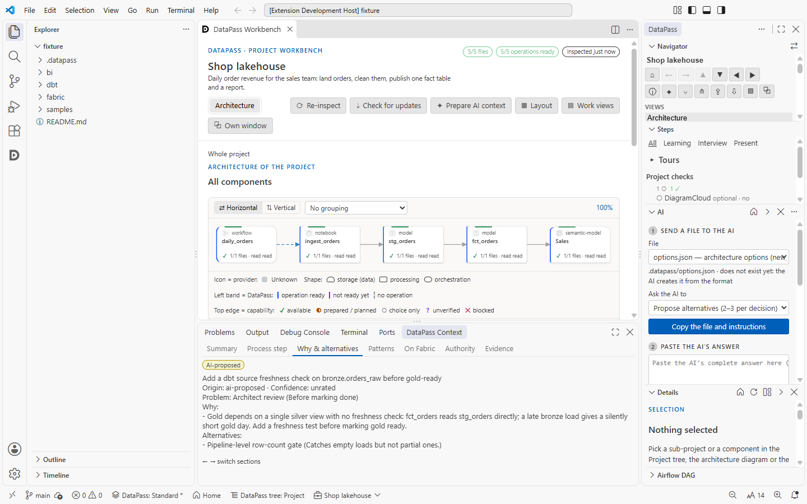
Turn the offers off with datapass.architectReview.suggestions.
Next steps. Every Navigator level has a Next steps table: what is still to do there, gathered only from facts DataPass already holds. Two new kinds of rows: gaps your AI reported through the exchange, and stale evidence (a verdict made on a file that has changed since). Each row jumps to where the work is.
13. Studio demo
Studio is a separate web app (repository datapass-studio) that opens a DataPass workspace export in the browser, with a DuckDB engine running in the page.
- In
datapass-studio:npm run build:shell, then serve the repository root on your machine only (for examplepython -m http.server -b 127.0.0.1 8000). - Open
/apps/studio-shell/dist/?workspace=examples/studio2/datapass-project.workspace.json. - The catalog shows the shared DataPass views; open a SQL sheet and run a query on the sample table (queries never run on open).
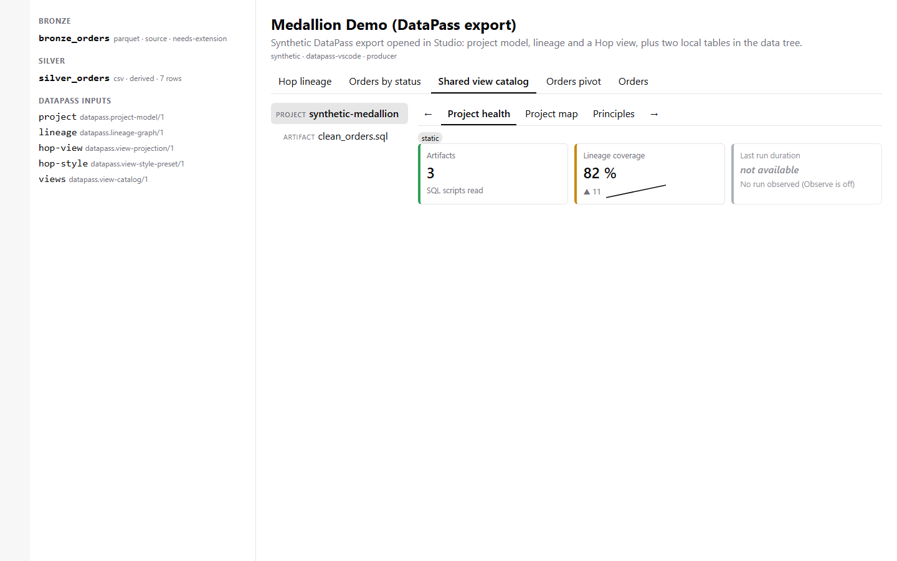 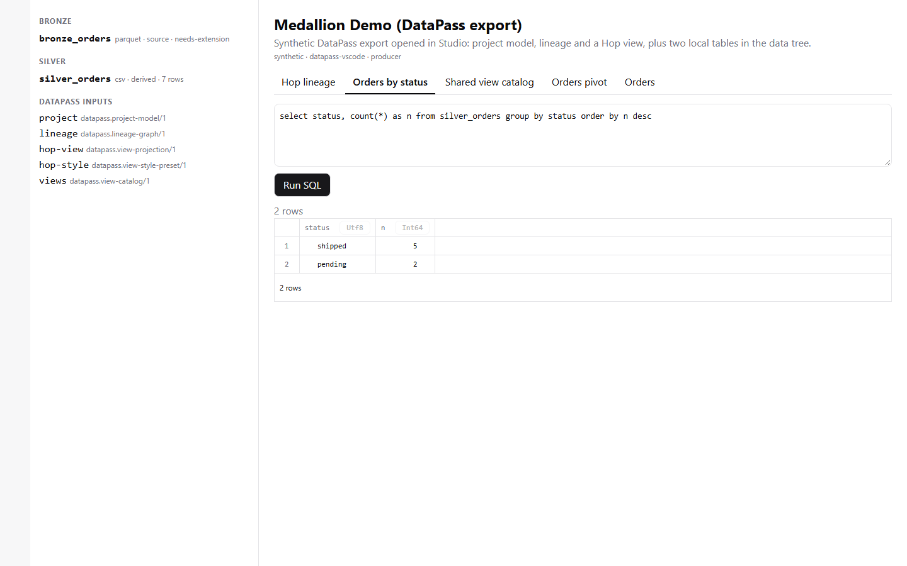
14. Turning V5 features off
Each V5 feature has its own switch; off means no UI and nothing computed.
| Setting | Turns off |
|---|---|
datapass.guided.enabled |
every guided tour, the Tours section and tour commands |
datapass.guided.generatedJourneys.enabled |
the tours generated from the project |
datapass.pedagogy.queryShowcase.enabled |
Queries Worth Showing |
datapass.guided.modes.learning.enabled, datapass.guided.modes.interview.enabled |
the Learning / Interview tours |
datapass.pedagogy.enabled |
all pedagogy cards and commands |
datapass.guided.ai.enabled |
Ask the AI for a Guided Tour |
datapass.architectReview.suggestions |
the architect review offers |
Not in V5
Moved to V5.1: the FastAPI endpoint view, layouts per Navigator step, and the cross-repository impact view.